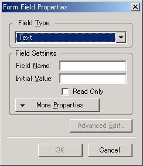
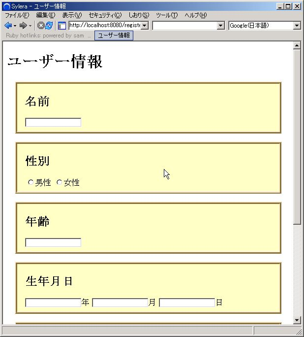
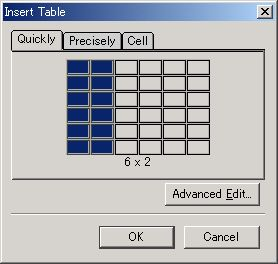
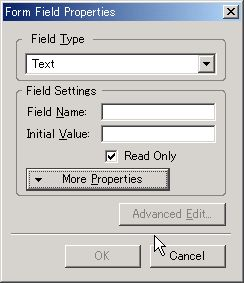
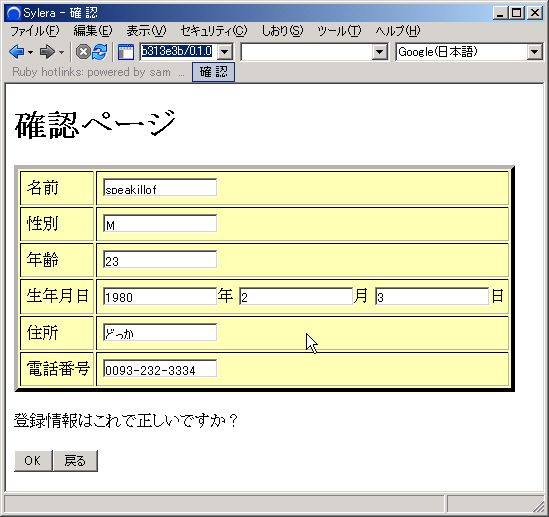

Nvu と CGIKit2 による Web アプリケーション開発
- 概要
- Nvuってなあに？食べ物？
- サンプルの説明をそろそろはじめろよー。
- Registration プロジェクト - 初めの一歩？
- Registration.rb - WEBrick 起動スクリプト
- index.html - スタート地点だね
- Registration::RegisterPage - そろそろ Ruby のプログラムを書けよー
- Registration::ConfirmPage - 確認、確認、確認
- ThanksPage - おしまいー
- 宿題
- リンク
- 謝辞
- 著者について
バックナンバー
0009号の付録ページ
著者: speakillof <speakillof at yahoo dot co dot jp>
概要
今回は Nvu という HTML オーサリングツールと CGIKit を使って Web アプリケーションを作ってみます。 Nvu を使えば HTML デザイナーの方が作った HTML を ほぼ無修正で CGIKit から利用することも可能です。
筆者はデザインが得意ではないので、これを読んだ皆さんが Nvu を使って色々とデザインしてくれることを期待しています。
対象とする読者
- Ruby がそれなりに分かる方
- CGIKit-2.x のるびま記事を読んだ方
- CGIKit の wiki のチュートリアルをやった方でも結構です。
- Nvu に興味のある方
- HTML の知識がそれなりにある方
- CSS の知識があると良いですが、必須ではありません。
必要なもの
- Ruby-1.8.2
- 標準添付されている WEBrick、 REXML
- cgikit-2.0.0-preview1
- Nvu-1.0
- サンプルのソース rubima-ck0009.zip
CGIKit のインストールの方法については 前々回の記事 やCGIKit の Wiki を参照してください。
Nvu に関しては Windows で動作確認をとっていますので、 同じ環境で試すことをお勧めします。
Nvuってなあに？食べ物？
… Nvu は食べ物じゃないです。 Nvuのサイト に書かれているように Nvu は Windows, Mac, Linux で動く WYSISYG(What you see is what you get の略) な HTML の オーサリングツールです。 ちなみに Nvu の読み方は New View という意味を込めて「エヌビュー」らしいです。
スクリーンショット

Nvu には様々な特徴がありますが、 http://www.nvu.com/features.html に書かれているものから抜粋して 下に載せます。
- レンダリングに Gecko を使用
- CSS Editor(CaScadeS)
- ユーザーインターフェースの改良(タブ、色選択ダイアログ、ツールバーなど)
- Markup Cleaner
- FTP サイトの管理機能
上の中には含まれていませんが、CGIKit-2.x を使う立場から Nvu を見ると、 XHTML のサポートという点が大きいです。 CGIKit-2.x ではXHTML (正確には XML と言うべきですが) を使用しますので、 Nvu の XHTML サポートとは相性が良い(はず)です。
Nvu の インストール・起動・設定 については本文とは関係ないので、 別ページに分割しています。詳細は 今号のCGIKit2の付録ページ へどうぞ。
サンプルの説明をそろそろはじめろよー。
はいはい、分かりましたよ。急かさないで下さい。 今回はサンプルとしてユーザー登録ページを作ります。 ページの流れは下のようになります。
登録のお願い (index.html)
｜
↓
ユーザー情報入力 ←┐ (Registration::RegisterPage)
｜↑ │ │
↓｜ └───┘
入力確認 (Registration::ConfirmPage)
｜
↓
登録終了のお知らせ (Registration::ThanksPage)各ページの HTML の大部分を Nvu で作ります。 そのため CGIKit や Ruby と関係のない部分が多くなりますが、ご了承ください。
Registration プロジェクト - 初めの一歩？
最初に Registration プロジェクトを作ります。 前回の記事と同じように
ruby ckproject Registrationとして Registration プロジェクトを作ります。 Windows では which コマンドが無いためエラーになることがあります。
``': No such file or directory - which ruby (Errno::ENOENT)この場合は whichコマンドを作る を参考にして which.bat を ckproject と同じフォルダーに 置いてから実行してみてください。
ckproject が終了すると、 Registration というフォルダーができます。 この時にいっしょに Registration の中に www というフォルダーを作っておきます。 この中には CSS やテンプレートではない 普通の HTML が保存されることになります。
Registration.rb - WEBrick 起動スクリプト
今回も WEBrick で開発します。起動用スクリプトは Registration/Registration.rb です。 起動方法は今までといっしょで Registration フォルダーに移動して
ruby Registration.rbとします。One-Click Installer for Windows を 使用されている場合は Registration.rb をダブルクリックして 起動することも可能です。
#!/usr/bin/ruby
# Registration.rb [port]
$LOAD_PATH.unshift('lib')
require 'webrick'
require 'cgikit'
require 'cgikit/webrick'
require 'application'
require 'session'
require 'directaction'
require 'kconv'
module Registration
module UserInfo
attr_accessor :name, :age, :sex, :year, :month, :day, :address, :phone
def to_utf8
@name = Kconv.toutf8(@name)
@age = Kconv.toutf8(@age)
@sex = Kconv.toutf8(@sex)
@year = Kconv.toutf8(@year)
@month = Kconv.toutf8(@month)
@day = Kconv.toutf8(@day)
@address = Kconv.toutf8(@address)
@phone = Kconv.toutf8(@phone)
end
end
def self.copy_info(from, to)
to.name = from.name
to.age = from.age
to.sex = from.sex
to.year = from.year
to.month = from.month
to.day = from.day
to.address = from.address
to.phone = from.phone
end
end
port = (ARGV.shift || 8080).to_i
app = Registration::Application.new
app.load_all_components('./components')
app.load_configuration('./cgikitconf.rb')
app.main = Registration::RegisterPage
server = WEBrick::HTTPServer.new({:Port => port})
server.mount('/', WEBrick::HTTPServlet::FileHandler, "www")
server.mount('/register.cgi', WEBrick::CGIKitServlet::ApplicationHandler, app)
trap("INT"){ server.shutdown }
server.start
各ページを作る前に ckproject が作ったスクリプトにいくつか修正を加えます。 一つ目は Kconv を使えるように require ‘kconv’ を追加することです。 Kconv は後で文字コードの推定・変更のために利用します。 二つ目は Registration::UserInfo と Registration.copy_info を定義することです。 前者はページ間でやり取りされるユーザー情報で、 後者はそのデータをコピーするためのクラスメソッドです。 後者はもう少しスマートに定義することができますが、 コードが読みにくくなるので今回は泥臭く定義します。 三つ目は URL と表示する内容の関連付けです。 下の部分が関連付けを行う部分です。
server.mount('/', WEBrick::HTTPServlet::FileHandler, "www")
server.mount('/register.cgi', WEBrick::CGIKitServlet::ApplicationHandler, app)URL の / は Registration.rb 実行時の Registration/www フォルダーに関連付けられ、/register.cgi は コンポーネントを表示するページに関連付けられます。
最後の4つ目は /register.cgi で表示されるコンポーネントの指定です。 実際に指定しているのは46行目の下の部分です。
app.main = Registration::RegisterPage前回までに説明したように CGIKit::Application#main に表示させたい コンポーネントのクラスを指定します。
index.html - スタート地点だね
最初に作るのは普通の HTML です。 このページが登録ページのスタートになります。
ここから実際に Nvu を使って HTML を作っていきます。 Nvu の使い方は簡単です。 Microsoft Word や OpenOffice のような ドキュメント作成ツールと同じように文章を入力するだけです。 Nvu は HTML オーサリングツールとしては比較的まともな HTML を生成してくれるので、 Nvu で作った HTML を手で修正するのも容易です。
初めにメニューの File -> New から 新しいページを作ります。
下のようなダイアログが現れるので、create a XHTML document にチェックが
入っていることを確認してから Create のボタンを押してください。

次に index.html として保存します。メニューの File -> Save を選ぶと
タイトルを聞かれるので、適当にタイトル名をつけます。

保存先は先ほど作った Registration/www です。 index.html として保存します。
最後に本文と登録ページへのリンクを作ります。
リンク(aタグ)は Insert -> Link から挿入します。
リンク先は /register.cgi とします。

リンクを挿入した後に細かい修正を行って、下の図のようにします。
この図は HTML のソースを手動で編集するモードになっています。
Nvu の下にある Source というタブがあり、これをクリックすることで
ソースを直接編集するモードになります。
元のモードに戻したい場合は Normal を押します。

index.html

これで少しは Nvu に馴れたでしょうか? デザインは CGIKit と関係ないので、ここでは扱いません。 付録ページに CSS を 使ってデザインする方法を説明していますので、 興味のある方はそちらをご覧ください。
Registration::RegisterPage - そろそろ Ruby のプログラムを書けよー
そうですね。CGIKit の記事なのですから、いい加減 Ruby のコードを 書かないと怒られてしまいますね。とはいえ、最初は Nvu で HTML を作ります。 ユーザー情報の登録ページなので、
- 名前
- 性別
- 年齢
- 生年月日
- 住所
- 電話番号
を入力するためのフォームを作り、 いっしょにエラーメッセージも入れます。 HTMLが一区切りついたら、それに Nvu で CGIKit と連携させるための 修正を少し加えます。後は前回までの記事と同様に *.ckd や *.rb に Ruby のコードを書いていくだけです。
RegisterPage.html
Nvu を使ってテンプレート(HTML)を作成します。 index.html と同じようにして新しい HTML を作り、 RegisterPage.html として Registration/components 以下に保存します。
次にフォームを挿入します。
Form のボタンを押すかメニューの Insert -> Form -> Define Form
で下の図のようなダイアログを表示させます。
何か入力しても良いのですが、後で CGIKit によって上書きされるので、
何も入力せずに OK を押します。alert が出ますが、無視して挿入します。

次に名前を入力するテキストフィールドを作ります。 フォームが水色の破線で表されているので、その中に 「名前」と入力します。そして、その後ろにテキストフィールドを挿入します。 Insert -> Form -> Form Field を選ぶと、ダイアログが出現します。 Field Type に Text を選択し、name 属性を適当に入力します。 name 属性を設定しないと、OKが押せませんので注意してください。 
以下、同じ要領で Nvu に入力していきます。
おおよそ下のような図になるようにします。

性別に関しては Insert -> Form -> Form Field で Field Type に Radio Button を選択します。 OK ボタンを挿入するには Insert -> Form -> Form Field -> Submit Button を選んで Name Value に「OK」 を入力します。
「ユーザー情報」「名前」などを目次として扱いたい場合は Heading である h1 や h2 タグを使います。目次にしたい部分を選んで、 アイコンの列の下にある Body Text の部分を好みの Heading に変えてください。 Heading 1 は h1 タグに、Heading 2 は h2 に対応します。
フォームが完成したら、各項目にエラーメッセージを挿入します。
CGIKit のテンプレートへ
ここから CGIKit のテンプレートとして使用できるように HTML を直接修正します。注意する点は下の 2 点です。
- form, input タグに ckid 属性を設定し、name 属性を削除
- エラーメッセージを ckid 属性の付いた span タグで囲う
name 属性は自分で付けても良いのですが、重複してはいけません。 重複させる不安があるのならば name 属性を消去したほうが無難でしょう。 name 属性が無い場合は 実行時に CGIKit が自動的に割り振ってくれます。
また、デザイン用にいくつかの div を追加します。
修正の結果、最終的に下のようになります。

編集が完了したら修正した部分が 正しいのかどうかを ckparse を使って検証します。
ruby ckparse Registration/components/RegisterPage.html下のように出力されたら文法的には OK です。失敗したら ckparse のエラーメッセージを見たり、 Nvu の メニューから Tools -> Validate HTML で XHTML として適合するかどうか チッェクしたりしてください。
#<CGIKit::HTMLParser::RootNode:0x1016fa18
@content="",
@name="",
@node=
[#<CGIKit::HTMLParser::TextNode:0x100c6bd0
@content=
"<!DOCTYPE html PUBLIC \"-//W3C//DTD XHTML 1.0 Transiti...ckparse の出力から ckid 属性が正しく付加されているかどうかもチェックできますので、 興味のある人は試してみてください。
RegisterPage.ckd
次に RegisterPage.ckd を作ります。
{
:form => {
:element => Form,
},
:name => {
:element => TextField,
:value => :name,
},
:male => {
:element => Radio,
:name => "sex",
:selection => :sex,
:value => "M"
},
:female => {
:element => Radio,
:name => "sex",
:selection => :sex,
:value => "F"
},
:age => {
:element => TextField,
:value => :age,
},
:year => {
:element => TextField,
:value => :year,
},
:month => {
:element => TextField,
:value => :month,
},
:day => {
:element => TextField,
:value => :day,
},
:address => {
:element => TextField,
:value => :address,
},
:phone => {
:element => TextField,
:value => :phone,
},
:submit => {
:element => Submit,
:action => :next_page
},
:error_name => {
:element => Conditional,
:condition => :error_name,
},
:error_age => {
:element => Conditional,
:condition => :error_age,
},
:error_sex => {
:element => Conditional,
:condition => :error_sex,
},
:error_date => {
:element => Conditional,
:condition => :error_date,
},
:error_address => {
:element => Conditional,
:condition => :error_address,
},
:error_phone => {
:element => Conditional,
:condition => :error_phone,
},
}
前回までの記事で説明した部分がほとんどです。 基本的に HTML のタグに対応するエレメントを HTML に割り振っていきます。 たとえば、input の type 属性の指定無しであれば TextField エレメント、 input type=”submit” なら Submit エレメントという感じです。
今回新しく使うエレメントは Radio です。 Radio によってグループ化されたボタンは その中の一つだけ選択することが出来ます。 Radio の設定部分を下に載せます。
:male => {
:element => Radio,
:name => "sex",
:selection => :sex,
:value => "M"
},
:female => {
:element => Radio,
:name => "sex",
:selection => :sex,
:value => "F"
},male, female の ckid 属性が付いているのは RegisterPage.html の input タグの radio です。 男性と女性を選択する部分ですね。
この二つをグループ化するには二つの Radio エレメントに同じ name 属性を与えます。 上の例では sex という名前でグループ化しています。 選択されたときに使用されるデータは selection と value で指定します。 value は選択されたときに代入される値で、 selection はその値が代入されるメソッド名(もしくはインスタンス変数)です。
この ckd ファイルの設定で OK ボタンが押されると、 Registration::RegisterPage#sex に 男性なら “M” が 女性なら “F” が代入されます。
これ以外のエレメントについては過去の記事に説明があります。 付録ページでも説明していますので、 気になる方はそちらをご覧ください。また、CGIKit で使用する HTML の説明も ありますので、合わせて読んでみてください。
RegisterPage.rb
最後に RegisterPage.rb です。 ここにコンポーネントのクラスを定義します。
require 'date'
module Registration
class RegisterPage < CGIKit::Component
include UserInfo
def next_page
to_utf8
@error_name = (@name.to_s == "")
@error_age = (/\A\d+\z/ !~ @age.to_s )
@error_sex = (/\A[MF]\z/ !~ @sex.to_s)
@error_address = (@address.to_s == '')
@error_phone = (/\A[0-9-]+\z/ !~ @phone.to_s )
y = @year.to_i
m = @month.to_i
d = @day.to_i
@error_date = false
begin
Date.new(y,m,d)
rescue ArgumentError
@error_date = true
end
error = @error_name || @error_age || @error_sex || @error_address || @error_phone || @error_date
unless error
p1 = page(ConfirmPage)
Registration.copy_info(self, p1)
p1
end
end
end
end
今までと同じように CGIKit::Component を継承しています。 これはコンポーネントを作る際に必須になります。 CGIKit::Component を継承しないと コンポーネントとして使えませんので注意してください。
Registration::UserInfo
RegisterPage は Registration::UserInfo を include しています。 これはユーザーが入力した情報を各ページで 参照・変更を可能にするためのモジュールです。 UserInfo にはアクセサと to_utf8 という文字コード変換の ためのメソッドがあるだけで、機能としては単純です。 コードについてはすでに Registration.rb で出てきていますので、 そちらをご覧下さい。
UserInfo#to_utf8 は入力データの文字コードを UTF-8 に変換します。 UTF-8 への変換のために Registration::UserInfo#to_utf8 では Kconv#toutf8 を用います。 1
今号の 標準添付ライブラリ紹介【第 3 回】Kconv/NKF/Iconv には Kconv/NKF の紹介があります。Ruby-1.8.2 に付属する Kconv/NKF のバグについても説明されていますので、一読されることをお勧めします。
Kconv の代わりに Uconv, Iconv で文字コード変換を したい人はそれでも結構です。 CGIKit では rbuconv が同梱されているので、 Kconv の代替には Uconv を使うことをお勧めします。
Registration::RegisterPage#next_page
サブミットボタンが押されたときに実行されるメソッドです。 内容はエラーチェックと次のページへの移動です。 以前説明したようにフォームに入力されたデータは RegisterPage に戻ってきて、そこで next_page が実行されます。 next_page が実行されるときには CGIKit によって 変数にフォームのデータが自動的に入っています。
エラーチェックは 12-26 行で行われています。 ここでは入力内容が適切かどうかを正規表現や Date クラスでチェックします。 エラーがあると該当部分の @error_… に true が代入されます。 エラーチェックの結果一つでもエラーがあると、 error というローカル変数が true になります。 最終的にこの error が表示されるページを決定します。 @error_… は Conditional エレメントの condition 属性に 指定されているので、@error_… に true が代入されると 最初に表示されなかったエラーメッセージが表示されるようになります。
error が false であれば、 29-33行で次のページになる Registration::ConfirmPage の オブジェクトが作られ、 入力された情報がコピーされて next_page の返り値になります。 こうすることで CGIKit が今作った Registration::ConfirmPage を表示してくれます。 もし、error が true であれば、next_page の返り値がないため そのまま self(Registration::RegisterPage) が表示されます。 すでに紹介したように self には 各項目についてエラーの有無が設定されていて、 それに基づいて Conditional エレメントがエラーメッセージを表示します。 また、ユーザーが入力した情報はエラーがあってもそのままフォームに表示されます。
例えば、名前だけを空欄にしたまま OK ボタンを押すとします。 こうすると、@error_name が true になり、next_page の返り値が self(Registration::RegisterPage) になります。 この時、それまで入力されていた内容が CGIKit によって フォームに表示され、いっしょに @error_name に対応する 名前のエラーメッセージも表示されます。
スクリーンショット
CSS でデザインしてこんな感じなります。 
Registration::ConfirmPage - 確認、確認、確認
RegisterPage で入力された内容をチェックするページです。 Registration::RegisterPage#next_page で入力情報が Registration::ConfirmPage のオブジェクトにコピーされています。 そのデータに基づいて入力情報確認用のフォームを表示させます。
ここで重要になるのは下の2点です。
- 入力情報を表示させること
- その情報を次のページに渡すこと
ConfirmPage.html
テーブルとフォームを使って RegisterPage で入力された内容を表示させます。 HTML は Nvu で作りますが、ここでもフォームを使います。 CGIKit ではフォームを使う方がデータを簡単に次のページに渡すことができます。
最初にフォームを作って、その中にテーブルを入れます。 Nvu でテーブルを作るには Table ボタンを押すか、メニューの Insert -> Table を選択します。 
上図ようなダイアログが現れるので、6x2 のテーブルを作ります。
テーブルの各セルには入力データの種類の名前とその内容を
表示するテキストフィールドを入力します。
それに加えてテーブルの下に二つのサブミットボタンを追加します。
以上で下のような図になると思います。
(この図では CSS で装飾を加えています)

このままだと、各フィールドの内容をユーザーが自由に修正できます。 そのため HTML タグの readonly 属性を使って 修正を不可能にしなければなりません。 各フィールドを選択して右クリックするとメニューが出現します。 その中に Form Field Properties という項目があり、 これをクリックするとフィールドの設定を行うことが出来ます。 readonly というチェックがあるので、 ここをチェックして readonly 属性を設定します。 
この後は RegisterPage.html のように ckid 属性を付けていきます。
下に修正後の HTML のソースを載せます。この HTML には簡単に CSS も記述してあります。

ConfirmPage.ckd
{
:form => {
:element => Form,
},
:name => {
:element => TextField,
:value => :name,
},
:sex => {
:element => TextField,
:value => :sex,
},
:age => {
:element => TextField,
:value => :age,
},
:year => {
:element => TextField,
:value => :year,
},
:month => {
:element => TextField,
:value => :month,
},
:day => {
:element => TextField,
:value => :day,
},
:address => {
:element => TextField,
:value => :address,
},
:phone => {
:element => TextField,
:value => :phone,
},
:ok => {
:element => Submit,
:action => :next_page
},
:back => {
:element => Submit,
:action => :prev_page
},
}
ConfirmPage.ckd と RegisterPage.ckd はほとんど同じです。 説明の必要は無いでしょう。
でも、ConfirmPage.ckd を作るのは面倒ではないでしょうか？ ConfirmPage.ckd と RegisterPage.ckd がほとんど同じであれば RegisterPage.ckd の内容を ConfirmPage.ckd に渡せたらと 思うのは自然なことです。
結論から言えば ckd の内容を共有することは可能です。 それには付録ページで述べた Ruby スクリプトに ckd ファイルの内容を 混ぜるという方法を使います。 しかし、この機能は CGIKit-2.0.0-preview1 では使わない方が無難なので、 ここでは紹介しません。興味のある方は挑戦してみてください。 この記事では RegisterPage.ckd の内容を ConfirmPage.ckd にコピーして から手動で修正をするという方法を取りました。
ConfirmPage.rb
module Registration
class ConfirmPage < CGIKit::Component
include UserInfo
def next_page
to_utf8
p1 = page(ThanksPage)
p1.name = self.name
p1
end
def prev_page
to_utf8
p1 = page(RegisterPage)
Registration.copy_info(self, p1)
p1
end
end
end
ここでは OK ボタンを押したときや 戻るボタン を押したときの挙動に関して 述べることにします。
OK ボタンや 戻るボタン には ConfirmPage.ckd で next_page と prev_page が action 属性に割り当てられています。 前者のメソッドは Registration::RegisterPage#next_page と同じく 入力データ(名前)を最終ページである Registration::ThanksPage のオブジェクトに コピーして、メソッドの返り値にしてページを表示させます。 後者のメソッドでは元のページに戻るために Registration::RegisterPage の オブジェクトを作って入力情報をコピーして prev_page のメソッドの返り値にします。
要するにページの移動は CGIKit のコンポーネントのオブジェクトを 渡してやれば良いわけです。 この時注意が必要なのは値の受け渡しです。 ConfirmPage.html でも述べたようにページ間のデータの受け渡しは フォーム(正確には Form エレメント)を介して行います。 注意してください。
スクリーンショット

ThanksPage - おしまいー
最後は入力された名前を表示させておしまいです。 新しいことは何も無いので、説明は省略します。
ThanksPage.html

ThanksPage.ckd
{
:name => {
:element => String,
:value => :name
}
}
ThanksPage.rb
module Registration
class ThanksPage < CGIKit::Component
attr_accessor :name
end
end
スクリーンショット

宿題
- ConfirmPage の性別の選択のところで男性は M が女性は F が表示されます。これを分かりやすい表示に変えてください。
- 今回は WEBrick で開発しましたが、実行環境を CGI に変更してみてください。何に注意しなければならないでしょうか。
- ThanksPage で表示されるページの内容が寂しいです。ConfirmPage#next_page の実装を変えて色々な入力データを ThanksPage に渡し、その情報に基づいて ThanksPage で表示させる内容を変えてみてください(例えば、誕生日石を表示させたり、占いを表示させたり)
リンク
CGIKit
Nvu
- Nvuの本家
- Nvu User Guide 日本語訳
- Nvu を使って管理しやすいHTML文書を作る
- 初心者が Nvu でつくるホームページ講座
- The 15 minute Guide to CaScadeS
謝辞
上記のサイトの管理者の皆様方には快くリンクの許可を頂きました。 本当にありがとうございました。
著者について
10月まで暇になってしまいました。暇にまかせてJavascript で遊んだり、 世界は残酷だなあとか訳のわからないことを考えたりしています。
私はあまり関係ないけど、Rails な人は Multilingual Rails で良いんですかね？ 本家の ML でむとうさんが反対していますが、 あのまま広がると後で悲しくなりそうです。 (世界の片隅で私一人が心配しても何の影響力も無いですけどね･･･) —-
-
本来であれば Kconv ではなく、NKF を直接使って文字コードの変換を行うべきです。しかし、それを行うと説明が冗長になること、標準添付ライブラリ紹介【第 3 回】に説明が載っているということ、を考え今回は割愛させていただきました。 ↩